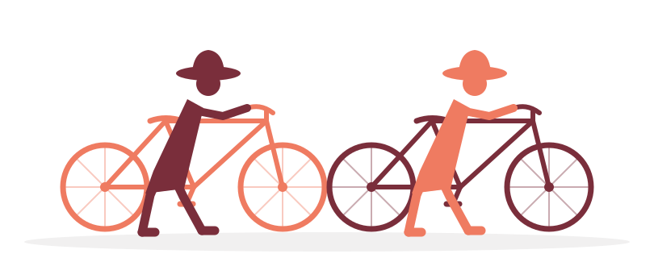

Lucca → Rome
A father and son, ~400 km by mountain bike, on an old road to an old city.
The Ride
My son and I are setting out to ride the southern stretch of the Via Francigena by mountain bike — the ancient pilgrim road that has carried travelers from northern Europe to the tomb of St. Peter for over a thousand years. Archbishop Sigeric of Canterbury wrote down his route home from Rome in 990 AD, and pilgrims have followed roughly the same line through Tuscany and Lazio ever since.
We start in Lucca and finish at St. Peter's in Rome — seven days, seven stages, and whatever the road decides to teach us along the way. Below is our planned itinerary and the GPS tracks we're using to navigate each stage.
- ~400Kilometers
- 7Days
- ~9,400Meters climbing
- 2Pilgrims
The Route
Switch basemaps with the control at the top-right of the map: CyclOSM highlights cycle routes and surfaces; OpenTopoMap shows contour lines and terrain. Data © OpenStreetMap contributors. Click a stage below to download its GPX file. (The Siena → San Quirico leg is a routed approximation via Buonconvento & Torrenieri, pending a recorded track.)
Daily Plan
| Route | Distance | Departure | Arrival | |
|---|---|---|---|---|
| 1 | Lucca → Fucecchio | 55 km | 07:00 | 11:00 – 12:00 |
| 2 | Fucecchio → Gambassi Terme | 32 km | 07:00 | 10:00 – 11:30 |
| 3 | Gambassi → Siena | 53 km | 07:00 | 12:00 – 14:00 |
| 4 | Siena → San Quirico | 65 km | 07:00 | 12:30 – 14:00 |
| 5 | San Quirico → Bolsena | 75 km | 07:00 | 13:00 – 15:00 |
| 6 | Bolsena → Viterbo | 35 km | 07:00 | 10:00 – 11:30 |
| 7 | Viterbo → Rome | 85 km | 07:00 | 13:00 – 15:00 |
About the Via Francigena: recognized as a Council of Europe Cultural Route, the Francigena isn't one fixed path but a corridor of historic ways — so the GPS tracks above follow the official Via Francigena cycle-route stages, which are broken up slightly differently than our day-by-day plan (a few of our longer days cover two marked stages back to back).